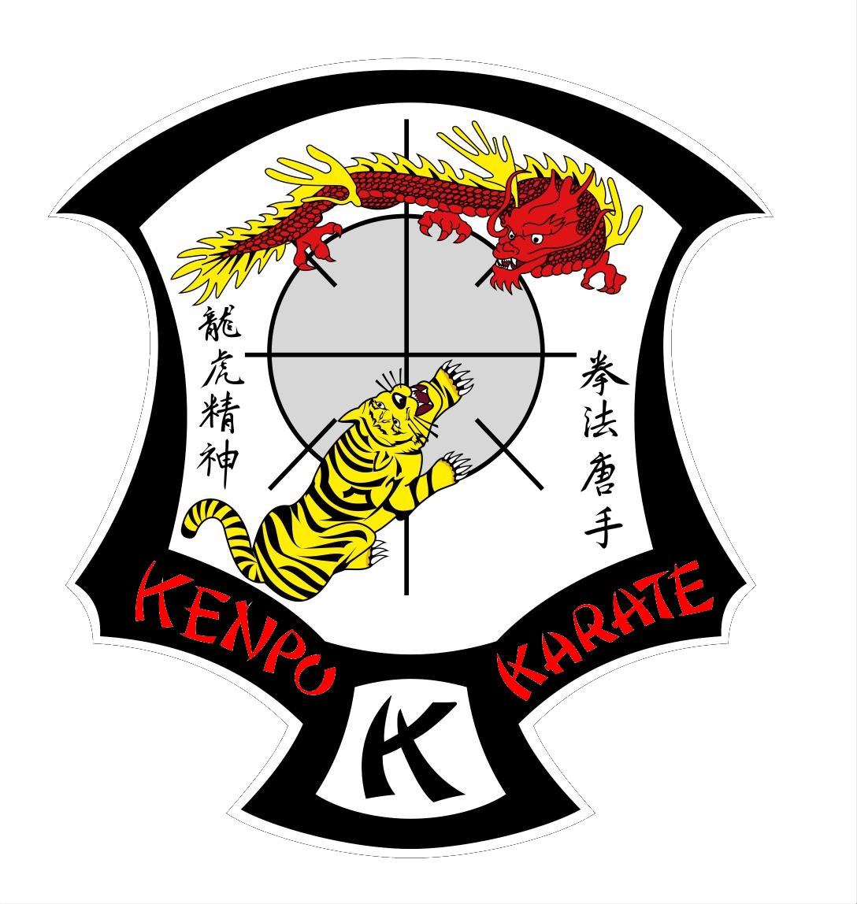

Cresta del Kenpo

American Kenpo, también conocido como Kenpo Karate, es un arte marcial híbrido que combina técnicas de karate tradicional con influencias de otras disciplinas de combate. Fue desarrollado en los Estados Unidos por Ed Parker en la década de 1940 y se caracteriza por su enfoque en la defensa personal práctica y efectiva.
| Id | Cinturón | Color | Significado | Grado |
|---|---|---|---|---|
| 1 | Blanco | Blanco | Inocencia y pureza, simboliza el comienzo del aprendizaje. | 9no kyu |
| 2 | Amarillo | Amarillo | El sol naciente, representa el crecimiento y la energía. | 8vo kyu |